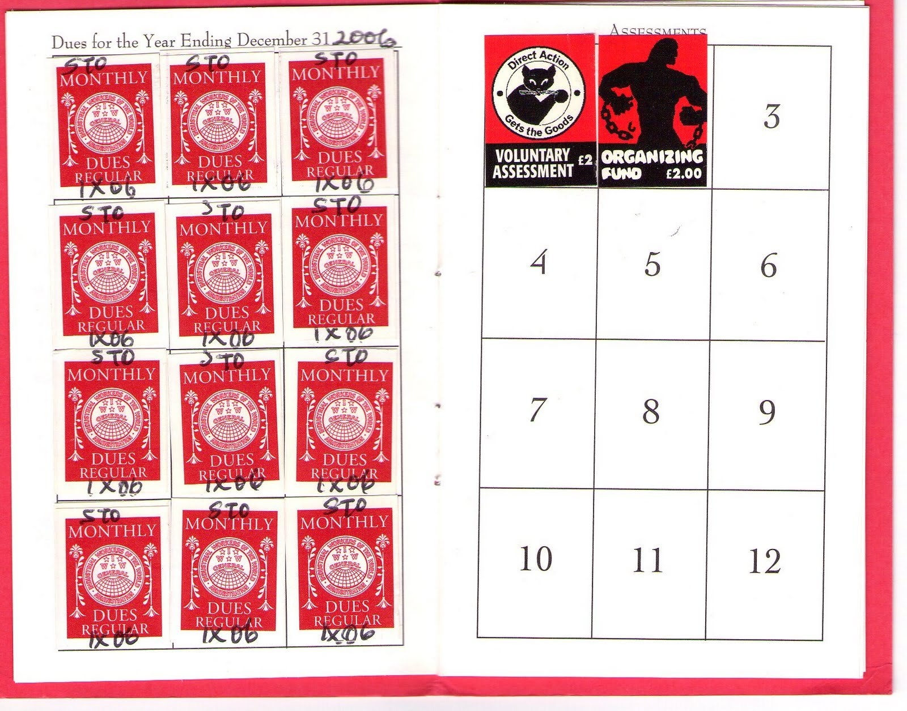

No One Strikes Harder than a Wobbly Dual Carder
Submitted on Mon, 12/28/2015 - 9:13pm
By anonymous - New Syndicalist, December 24, 2015
Like many IWW members in the UK I work in the public sector. Traditionally this has been an area of high trade union density particularly in teaching, the civil service and health. It is also one of the last bastions of collective bargaining power for the trade union movement. Although as the recent record of capitulation to austerity policies, cuts in pay and cuts in social services shows trade union density rarely equals trade union militancy.
“Dual carding” – membership in a craft union alongside the IWW – is a relatively underdeveloped strategy for the UK. In spite of a reputation for “minority unionism” Wobblies have historically played animating roles in trade unions aside their commitment to building a combative and revolutionary alternative to craft union structures. The IWW, after all, was the product of an amalgamation of the most militant and advanced expressions of the trade union movement of the time.
In spite of this it would also be simplistic to say that membership in the IWW and activity in a broader trade union is fully harmonious. The IWW does ultimately exist as a criticism of the limitations of craft unionism and its reformist methods. Many leftists labour under the illusion that trade unions can be captured and turned towards revolutionary aims. In practice this has often meant running left leadership slates for union elections. A practice that is neither appealing to Wobblies nor has proved particularly successful in terms of shifting the actual activity of trade unions. An equally common approach is to stoke rank-and-file militancy at the branch level, either through the building of left caucuses or networks of militant reps. This seems like a more natural approach for a Wobbly to take promoting those qualities and methods that we see as valuable in syndicalist organising – militancy, activism from the roots, bottom-up over top-down etc.
Yet this approach also has its limitations. The structure and organisation of the trade unions can undercut struggles even at the rank-and-file level. Just like any experienced organiser should prepare strategies for dealing with a difficult and divisive boss, a dual-carder needs to anticipate and prepare for the possibility that trade union bureaucracies will undermine the work of militant organisers and remove them from a position of influence with the membership if they see them as troublesome or a threat. Our aims should also go beyond simply organising more militant and combative trade unions. We need to understand how our activities as trade unionists help to sow the seeds of workers’ control in our industries in addition to building links with those in unorganised sectors and supporting our fellow workers growing IWW campaigns.
I recently had the opportunity to act as a representative for my local NUT (National Union of Teachers) branch, below are a number of observations developed from experimenting with this new role. My aim is that these offer a contribution to some of the issues that are raised above as part of a broader debate on dual-carding in the union:
1. Debunking the myth of the “militant union rep” – building a militant membership
It is a widespread view within trade union branches that it’s reps who should do most of the leg-work. This perception is reinforced by the fact that the majority of union resources, communication and, most importantly, meetings with management happen exclusively through the rep. The result is that workmates will talk more or less favourably about “bolshie reps” who are capable/incapable of standing up to management on their behalf. This is a bottle-neck in collective strength that a boss can easily exploit to demobilise, distract or diffuse the activity of the union. Good reps need to send the message out that it’s the membership that calls the shots and not them. A step towards building a new union culture on this basis is bringing workmates into these otherwise exclusive communication channels. Dual-carders should share rep guides and union resources, carefully minute meetings with management, show how issues raised have been actioned and insist that problems are raised collectively through regular branch meetings and not via private communication with the rep. Even in recognised workplaces workers need to be educated on the idea that the union is only as strong as its membership and a poorly organised union can easily fall into a forum of consultation with management or even be de-recognised.
2. The branch is not a social space – so make one.
Trade union branches are generally very poorly organised. This does create opportunities for dual-carders in terms of introducing more democratic and inclusive processes without much institutional resistance. But in the absence of such clear structures meetings can often just be collective moaning sessions that can be tiring and demobilising for those involved. It is, of course, important for people to blow off steam especially in stressful professions but this shouldn’t come at the expense of collective action. So why not create alternative spaces to do that? In the North we have been experimenting with this kind of model for young professionals in teaching. Our “Educators Underground” group meets once a month with young education professionals across the city. We talk about stresses and emotional challenges we have had at work, discuss alternative educational theories and provide advice and support to each other going back to our union branches. This helps to fill gaps in the current trade union structure as well as making us feel like we are well supported by our fellow workers in the same sector.
3. Act collaboratively, reproduce yourself.
Any good organiser should aim to reproduce themselves and this is as true of a dual-carder as it is an organiser within an IWW campaign. By sheer coincidence when I stood for position of branch union rep another workmate also expressed interest in the role. Rather than run a competitive election I suggested that we could share the job. This turned out to be a beneficial move for both of us. I was grateful for the help and support my co-rep could offer in getting to grips with the new role. Having another perspective on the running of the branch was also really valuable. I was able to support them in areas where they were less experienced such as meeting with the boss for the first time. And together we were able to bring in more robust changes to how branch meetings were run by virtue of the extra pair of hands and added energy. We also had the bonus benefit of strength of numbers in our last meeting with management (myself, my co-rep and the outgoing rep outnumbering the head 3-1)! I’m now convinced that this practice should be pushed in all areas where it is practical. It shares out valuable skills, makes sure that there are others to step up when you are unable to fully take on union responsibilities and further debunks the myth that the rep is the linchpin of the branch.
4. Act like OBU, even if you aren’t one.
Most public sector workplaces will have multiple recognition deals with different sections of the workforce. Legal action across these divides is difficult (that’s not to say that other forms of solidarity aren’t both practical and desirable) but there is nothing stopping you acting as a single unit in terms of how you organise within that work site. Inviting reps from other trade unions on site to your branch meetings is a good first step towards building dialogue between different sections of the workforce. Individuals or groups from unorganised sections can likewise be sought out and invited, for example, agency or temporary staff. Ideally at a more advanced stage this could evolve into a forum for discussion and decision-making across the work site and present a natural springboard for cross-site solidarity and industrial action.
Within this it is similarly important to maintain a parallel structure of social contacts and connections with workmates that exist outside the official trade union role. If you get into a position where you need to call unofficial or unsanctioned industrial action the trade union will do everything in its power to halt it. It’s important in this case to have a working knowledge of the social map of your workplace to ensure success irrespective of the existence of the trade union labels. If you have approached the role with the idea of organising the worker as well as the branch you should be able to call on the former when the latter comes under attack. In effect falling back on the strength of the red card when the blue/green/grey/yellow/white one has failed you.
Disclaimer: The views expressed here are not the official position of the IWW and do not necessarily represent the views of anyone but the author’s.
| Attachment | Size |
|---|---|
| OpenRedCard.jpg | 387.92 KB |
{kind=link}